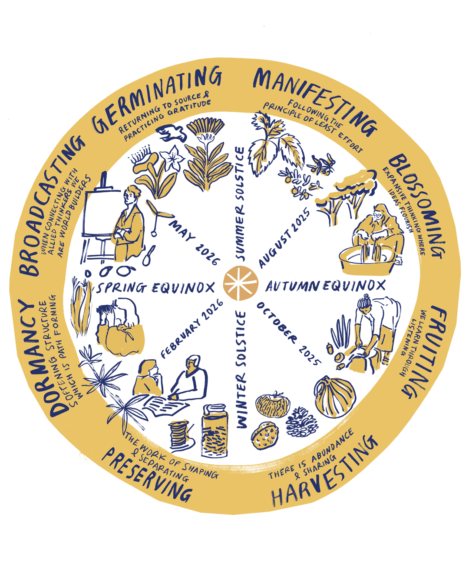

Botanical Colour is a community-rooted project exploring the magic of natural dyeing through plants, art, and shared knowledge.
This archive and project is led by Makepeace Studio and collaborators to honour the living traditions of plant-based colour, seasonal rhythms, and slow making.
Each swatch represents a plant dye from Margaret & David Redpaths archive, click them to discover artwork, recipes, and workshop memories.
Have something to share? Get in touch or join a workshop.
